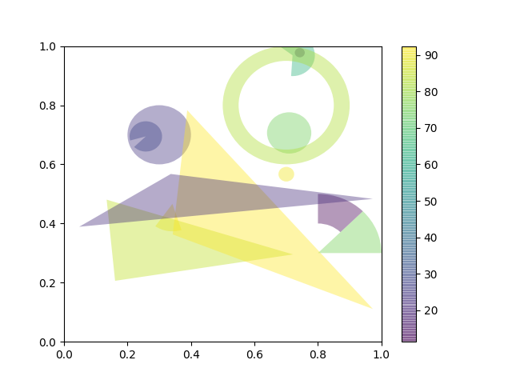

This example demonstrates how to use patch collections.
import numpy as np
import matplotlib
from matplotlib.patches import Circle, Wedge, Polygon
from matplotlib.collections import PatchCollection
import matplotlib.pyplot as plt
# Fixing random state for reproducibility
np.random.seed(19680801)
fig, ax = plt.subplots()
resolution = 50 # the number of vertices
N = 3
x = np.random.rand(N)
y = np.random.rand(N)
radii = 0.1*np.random.rand(N)
patches = []
for x1, y1, r in zip(x, y, radii):
circle = Circle((x1, y1), r)
patches.append(circle)
x = np.random.rand(N)
y = np.random.rand(N)
radii = 0.1*np.random.rand(N)
theta1 = 360.0*np.random.rand(N)
theta2 = 360.0*np.random.rand(N)
for x1, y1, r, t1, t2 in zip(x, y, radii, theta1, theta2):
wedge = Wedge((x1, y1), r, t1, t2)
patches.append(wedge)
# Some limiting conditions on Wedge
patches += [
Wedge((.3, .7), .1, 0, 360), # Full circle
Wedge((.7, .8), .2, 0, 360, width=0.05), # Full ring
Wedge((.8, .3), .2, 0, 45), # Full sector
Wedge((.8, .3), .2, 45, 90, width=0.10), # Ring sector
]
for i in range(N):
polygon = Polygon(np.random.rand(N, 2), True)
patches.append(polygon)
colors = 100*np.random.rand(len(patches))
p = PatchCollection(patches, alpha=0.4)
p.set_array(np.array(colors))
ax.add_collection(p)
fig.colorbar(p, ax=ax)
plt.show()
Total running time of the script: ( 0 minutes 0.039 seconds)